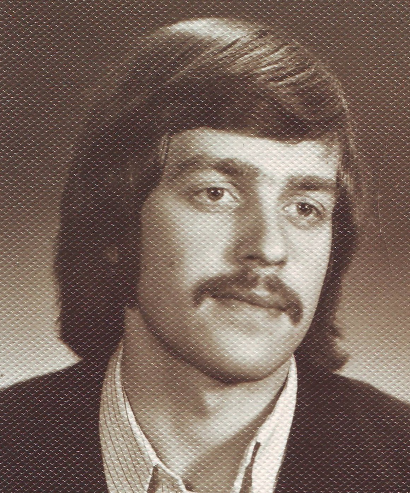

Pēteris Voroņins b. 1953
Husband of Peter's second cousin once removed Velta Stangaine.
Living. As for every living relative on this site, the birth date is given by year only, and no current address is shown.
Pēteris Voroņins was born in 1953 in Straupe, Vidzeme, Latvia (according to an online family tree)1. He married Velta Stangaine on 11 Jun 1977 in Rauna, Cēsis district, Vidzeme, Latvia3,4.
Family
- Wife
- Velta Stangaine b. 1955 · married on 11 Jun 1977 in Rauna, Cēsis district, Vidzeme, Latvia3,4
- Children
- Raimonds Voroņins b. 1978 documented
- Inga Voroņina b. 1981 documented
- Līva Voroņina b. 1990 documented
Life events
| Event | Date | Place and details |
|---|---|---|
| Born | 1953 | Straupe, Vidzeme, Latvia According to an online family tree1 |
| Married | 11 Jun 1977 | with Velta Stangaine Rauna, Cēsis district, Vidzeme, Latvia3,4 |
| Note | According to an online family tree2 |
Photographs


Sources
- MyHeritage family tree 'Dzimta' of Peter's third cousin (his family site), member GEDCOM export of 26 Oct 2026, I1 (person-6000001), GEDCOM lines 26–64.
BIRT · 1953 · Straupe
- MyHeritage family tree 'Dzimta' of Peter's third cousin (his family site), member GEDCOM export of 26 Oct 2026, I1 (person-6000001), GEDCOM lines 26–64.
RESI
- Ainas Sirlakas atmiņas ("Vīstuči"), Aina Jurciņa née Sirlaka, Priekuļi, 1998, p. 35, section "DĀVJA UN ALMAS OZOLA PAZARĪTES".
Velta Ilgas meita Stangaine … Pēteris Voroņins … Bērni: Raimonds, dz. 1978. [day omitted] … Inga, dz. 1981. [day omitted] … Līva, dz, 1990. [day omitted]
Translation: Velta Stangaine, daughter of Ilga … Pēteris Voroņins … Children: Raimonds, b. 1978 … Inga, b. 1981 … Līva, b. 1990
LIVING couple. Children Raimonds (the sender of the memoir, FTDNA match, Peter's 3rd cousin), Inga and Līva (all LIVING). Pēteris is probably "Pēteris, Jāņa labā roka" of the 1993 work-party (p. 44).
- MyHeritage family tree 'Dzimta' of Peter's third cousin (his family site), member GEDCOM export of 26 Oct 2026, family F1 (I1 Pēteris Voroņins × I2 Velta Stangaine).
MARR 11 JUN 1977 Rauna